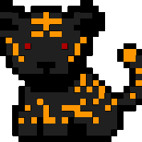

Games
Here is where I will put the names some of my favorite games,
as well as some good ones and some bad ones.
!!Note that these are based on games I (have/have not) played and are based on my own opinion when I viewed or played them.!!
!!Any games I have not seen or played will not be posted here. If you have sugestions go to email me.!!
email: sr.justin.dorris@gmail.com
Foavorites:
Final Fantasy (all of them)
Elder Scrolls
Dragon's Dogma: Dark Arisen
Minecraft
Jak and Daxter (all of them)
Fallout (only 3 and after)
Doom
Kingdom Hearts (all of them)
Beyond 2 Souls
Battleborn
Borderlands (both of them, not the telltale game)
No Man's Sky
Wolfenstine
Soma
The Wolf Among Us
The Crooked Man
Heavy rain
The Last Story
Ib
The Magic Circle
Good games:
Dark Souls (all of them)
Bloodborn
Demon souls
Five Nights at Freddy's (all exept FNAF-world)
The Joy of Creation (all of them)
Half Life (both of them)
Tales Series (all exept Xillia 2)
Rachet and Clank (all of them)
Enter the Gungeon
Salt and Sanctuary
Silent Hill (all of them)
Dead Secret
The Descendant
The vanishing of Ethan Carter
Undertale
Tetris
Fragile Dreams
FranBow
Metal Gear Solid (all of them
crash bandicoot
legend of zelda (all made by nintendo)
subnautica
Ori
spyro (classics)
Neverending Nightmares
Picmin
Kraven Manor
Outlast
Among The Sleep
Valiant Hearts -The Great War-
Bioshock (all of them)
Okami
Halo (only up to the 2nd though)
Indifferent:
Call of Duty (all of them)
Overwatch
The Evil Within
Slender (all of them)
Untill Dawn
GTA (all of them)
The Stanley Parable
Resident Evil
The Last of us
Portal (both of them)
The Division
Rainbow Six Seige
civilisation (just 5)
Dishonored
Bad games:
FNAF-world
Goat Simulator
Skate 3
Tales of Xillia 2
Watch Dogs
Battlefield (most of them)
Borderlands (telltale)